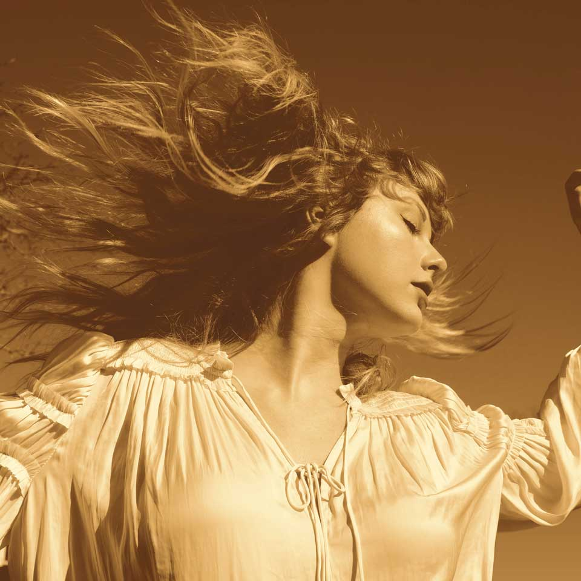

cowboy

Taylor Alison Swift (West Reading, Pensilvania; 13 de diciembre de 1989) es una cantautora, productora, directora, actriz y empresaria estadounidense. Criada en Wyomissing (Pensilvania), se mudó a Nashville (Tennessee) a los 14 años para realizar una carrera de música country. Firmó con la compañía discográfica independiente Big Machine Records y se convirtió en la artista más joven contratada por Sony/ATV Music Publishing House. En 2006 lanzó su álbum debut homónimo, que la estableció como una estrella en la música Pop. «Our Song», su tercer sencillo, la convirtió en la persona más joven en escribir temas de forma solista e interpretar una canción número uno en la lista de Hot Country Songs. En 2008 recibió una nominación a mejor artista nuevo en la 50.ª edición de los Premios Grammy.
Taylor lleva 17 años en la industria y, actualmente tiene 10 álbumes.
Por problemas
con su disquera, con quien hizo sus primeros 6 álbumes, dejó de ser dueña de su música, por
lo que actualmente se encuentra regrabando esos primeros discos.
Los nombres de estos son:
| Album | Portada | Era |
|---|---|---|
| Taylor Swift |
|
Verde y azul, cowboy |
| Fearless (Taylor's version) |  | Amarillo, vestidos de época, highscool |
| Hora | Lunes | Martes |
|---|---|---|
| 7am | Desayuno | |
Taylor ha tenido numerosas relaciones amorosas, quienes ayudan a inspirar las canciones de los albumes, uno de estos exes son: